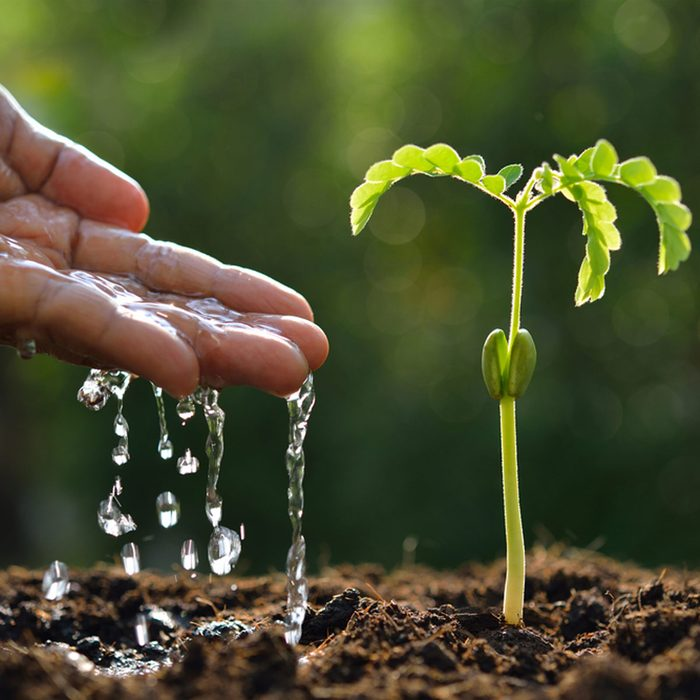

AGRI

Hom Agri is your go-to resource for everything related to house gardening. Whether you're an experienced gardener or just starting your first home garden, we provide knowledge and tips to help you succeed. Discover how to grow healthy plants, maintain sustainable gardens, and transform your living spaces into green havens.
What You'll Find on Agro House
1. Gardening Tips for Beginners
If you're new to gardening, our beginner-friendly guides will help you get started. Learn the basics like choosing the right plants, preparing soil, and understanding plant care essentials.
2. Home Garden Planning
Planning your home garden can be overwhelming, but we're here to help. Get tips on choosing the best location, plant selection, and garden design, making the most out of small spaces.
3. Organic Gardening Practices
Learn the benefits of organic gardening, using natural methods for pest control, composting, and sustainable watering. We'll help you create an eco-friendly garden that’s good for the environment and your health.
4. Common Plants for Home Gardens
Discover how to grow vegetables, herbs, and flowers that thrive in house gardens. From tomatoes to leafy greens and fragrant herbs, find everything you need to start harvesting from your own garden.
5. House Gardening Tools & Resources
Agro House offers advice on the best gardening tools and equipment to make your gardening experience easier and more productive.
6. Benefits of Home Gardens
A home garden not only beautifies your space but also improves health, provides fresh food, and contributes to a sustainable lifestyle